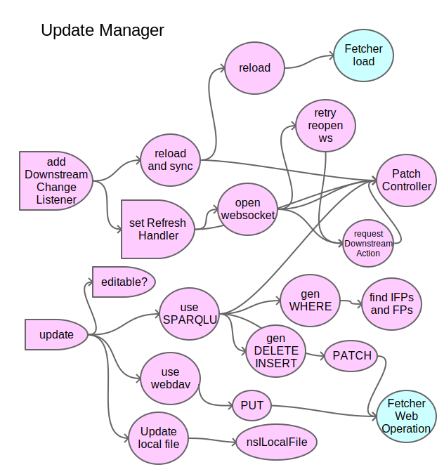

See also
The rdflib library is modular. Higher level functions such as the Update Manager and the Fetcher depend on the core modules such as the Store, which depends on low level parts such as the basic RDF model.
The Fetcher module adds an awareness of the web of linked data, rather than just abstract RDF. It implements http(s): and file: URIs and tracks the metadata from the HTTP transaction and stores that also in the store. This diagram points out that the responsibility for retrying access attempts which fail because of different HTTP errors and/or browser blocking in CORS are handled in various different places.
The Fetcher does not handle PATCH - that is done by the Update Manager.
The update manager has two sides, for upstream and downstream patches. Upstream patches are when athe user changes something in the UI and the patch goes up to the server to change the web od data. Downstream patches are when someione else out there changes the resopurce, and the UI has to be updated. For this, (currenlty) a WebSocket proctol is used, in whihc the client is sent a 'pub' flag and reloads the file. In future, the server may send a patch directly to the client, which can then update the quad store without having to reload the document.